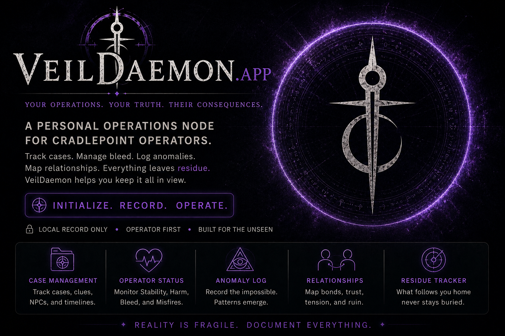

Studio description
Cradlepoint is an independent creative technology studio built around original transmedia horror-fantasy IP—tabletop publishing, Needlepoint case modules, VeilDaemon companion software, fiction, and digital media.
Press + media
Approved studio background, founder material, imagery, screenshots, and interview resources.

Cradlepoint is an independent creative technology studio built around original transmedia horror-fantasy IP—tabletop publishing, Needlepoint case modules, VeilDaemon companion software, fiction, and digital media.
J. Donavon Love is the systems designer, creative director, and canon authority behind Cradlepoint Studio.
Primary and simplified logos, founder portrait, product renders, world artwork, software screenshots, boilerplate, and approved public metrics are available for legitimate coverage and partnership review.
For interviews, demonstrations, review access, or higher-resolution approved media, contact the studio directly.
Contact J. Donavon Love →